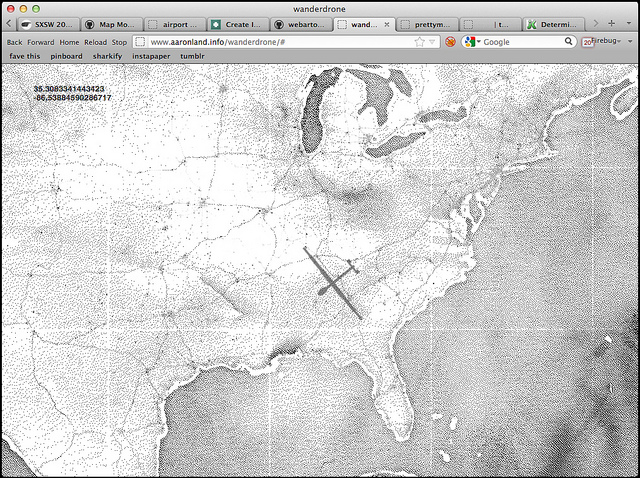

dot dot dot dot dot (and so on).
Atkinstache is a TileStache provider for generating stylized black and white halftone, or "dithered", map tiles using another tileset as its input. The halftone effect is accomplished using Bill Atkinson's original dithering algorithm created for the first Apple Macintosh computers.
Typically you would use satellite imagery but there's nothing to stop you from using a different source.
Microsoft aerial tiles, dithered.
Stamen Watercolor
tiles, dithered.
You can download this project in either zip or tar formats.
You can also clone the project with Git by running:
$ git clone git://github.com/straup/tilestache-atkinstache